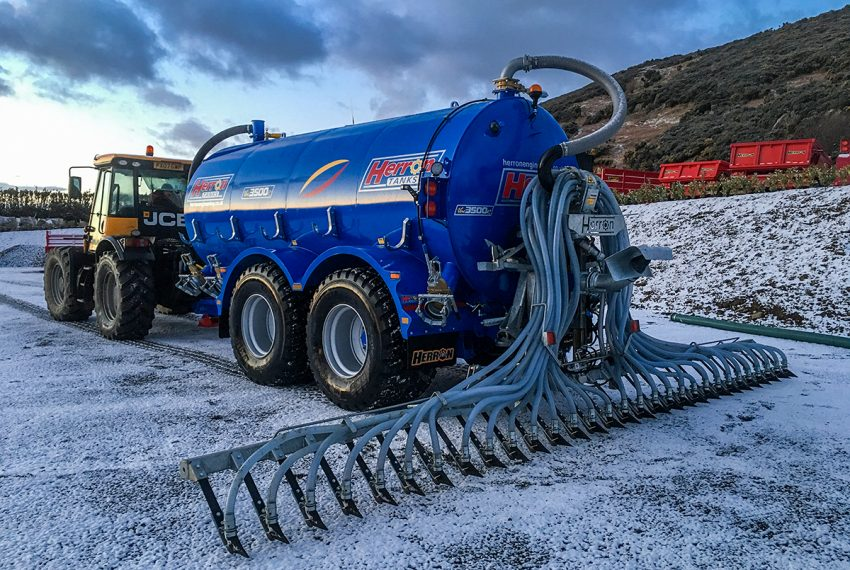

OUR SERVICES
Slurry spreading
Equipment for slurry distribution and transfer.
Discuss slurry spreading ↗
Let’s work through
the details.
The published range includes a trailing shoe / dribble bar and a hydraulically operated overhedge boom for tanker-to-tanker transfer.
EXPLORE THE MODELS
01↗02↗
Trailing Shoe / Dribble Bar
Herron Engineering offer a 7.4m fully galvanised Trailing Shoe / Dribble Bar with a spring loaded ground attachment, 30 port Vogelsang macerator, mast type ‘A’ frame close fitting attachment and full electrics.
Overhedge Boom
The Herron Engineering over hedge boom is hydraulically operated and delivers the slurry from one tanker to another via a top fill hatch.